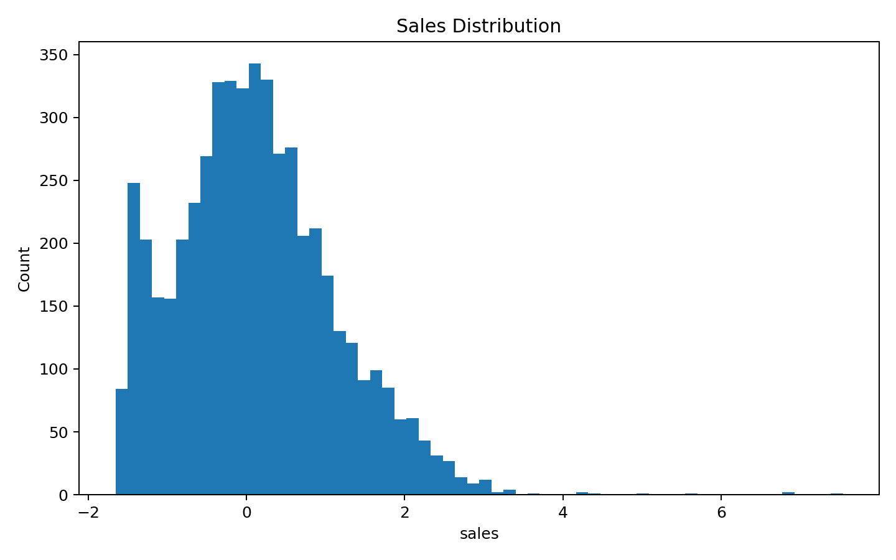
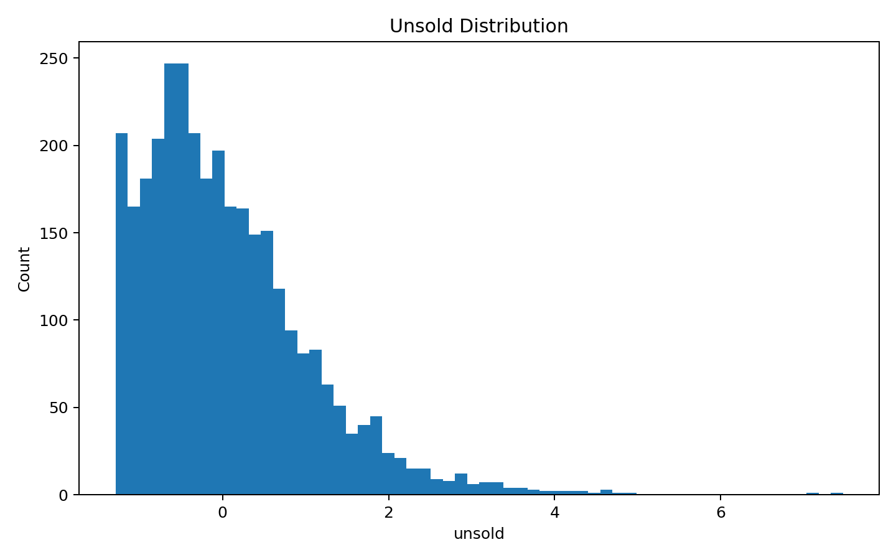
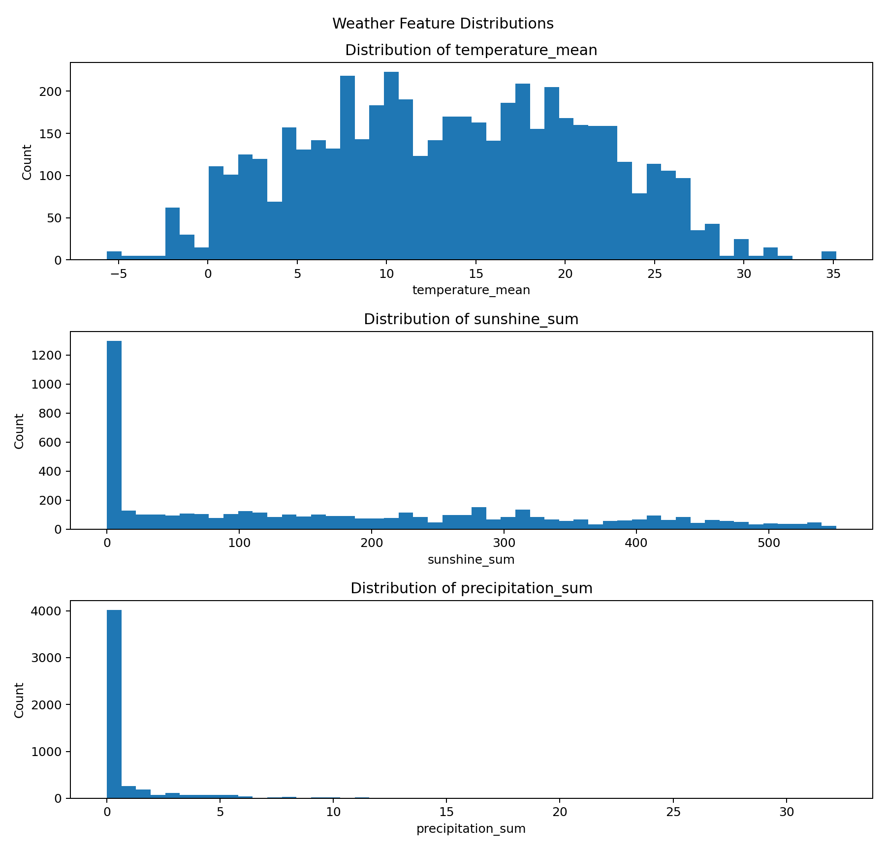
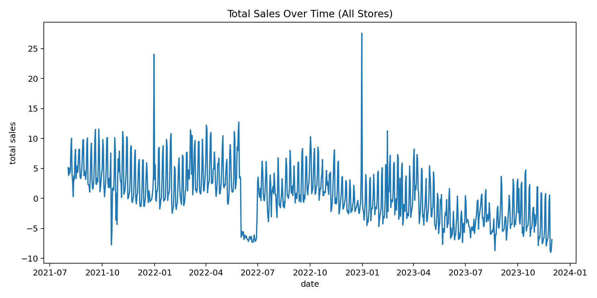
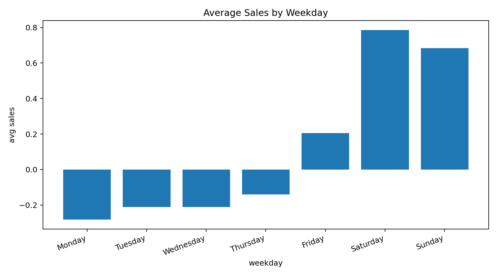
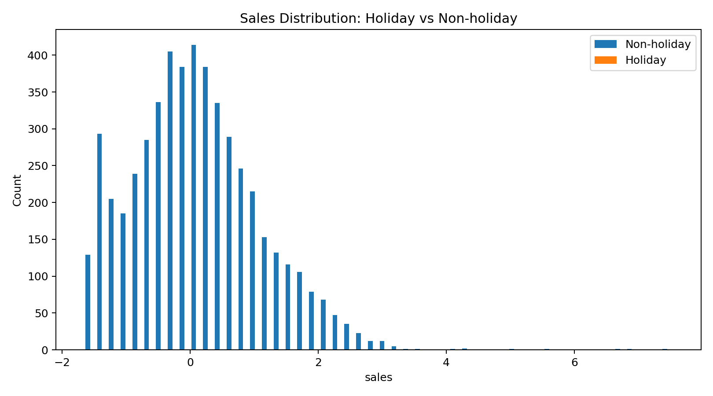

The Dataset
We use the Reduce-Foodwaste Dataset, which combines daily store-level sales with contextual signals such as holiday indicators and weather measurements. These inputs help models learn what drives day-to-day variability beyond simple seasonality.
Source: Reduce-Foodwaste Dataset (GitHub)
Download & Structure
Source repository
The dataset is maintained by Green-AI-Hub-Mittelstand on GitHub.
How to download
You can clone the repository or download it as a ZIP file, then load the CSV locally for training and analysis.
Example: git clone ...
Schema (columns)
Daily store-level sales with holidays and weather signals:
date, store, is_state_holiday, is_school_holiday, is_special_day, temperature_max, temperature_min, temperature_mean, sunshine_sum, precipitation_sum, sales, unsold, ordered
Column overview
| Column | Type | Description |
|---|---|---|
| date | Date | Daily timestamp. |
| store | Category | Store identifier (store-level series). |
| is_state_holiday | Binary | 1 if state holiday, else 0. |
| is_school_holiday | Binary | 1 if school holiday, else 0. |
| is_special_day | Binary | 1 if special day/event, else 0. |
| temperature_max | Numeric | Daily max temperature. |
| temperature_min | Numeric | Daily min temperature. |
| temperature_mean | Numeric | Daily mean temperature. |
| sunshine_sum | Numeric | Total sunshine duration (daily sum). |
| precipitation_sum | Numeric | Total precipitation (daily sum). |
| sales | Numeric | Observed sales (target). |
| unsold | Numeric | Unsold amount (waste proxy). |
| ordered | Numeric | Ordered amount (supply/planning). |
Quick distribution summary (tables)
Summary statistics computed from train.csv.
Numeric summary
| Feature | Mean | Std | Min | Max |
|---|---|---|---|---|
| sales | 0.1155 | 0.9977 | -1.657 | 7.54 |
| unsold | 0.0476 | 0.9945 | -1.2898 | 7.4724 |
| ordered | 0.0926 | 0.9675 | -1.7158 | 7.8692 |
| temperature_mean | 13.6417 | 7.8255 | -5.6545 | 35.1727 |
Holiday proportions
| Flag | 0 | 1 |
|---|---|---|
| is_state_holiday | 100.00% | 0.00% |
| is_school_holiday | 100.00% | 0.00% |
| is_special_day | 100.00% | 0.00% |
Note: In the current dataset split, holiday flags are all zero.
Missing values overview
| Column | Missing count | Missing % |
|---|---|---|
| temperature_mean | 0 | 0.00% |
| sunshine_sum | 0 | 0.00% |
| precipitation_sum | 0 | 0.00% |
Distribution visualizations
Export plots as PNG to docs/assets/plots/ and the page will display them.
Recommended: histogram/boxplot for numeric features, and time series for sales.
Sales distribution

Histogram / KDE to inspect skewness and outliers.
Waste (unsold) distribution

Often heavy-tailed; consider log transforms.
Weather feature distributions

Temperature & precipitation summaries.
Sales over time

Trend + seasonality checks (weekly/yearly patterns).
Sales by weekday

Boxplot or bar chart by weekday.
Holiday impact

Compare distributions for holiday vs non-holiday days.
Data preparation (workflow)
- Clean and validate daily records
- Handle missing values consistently
- Create time-based features from dates (weekday, month, lag features)
- Split chronologically to simulate real forecasting
- Train and evaluate across stores and time periods